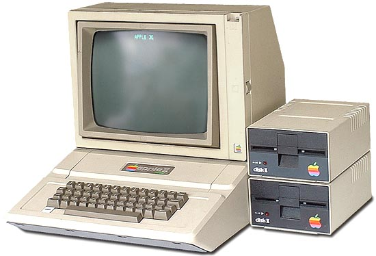

Left
Mengenal Komputer
Middle
Komputer adalah alat yang dipakai untuk mengolah data menurut perintah yang telah diprogram. Kata komputer semula dipergunakan untuk menggambarkan orang yang perkerjaannya melakukan perhitungan aritmetika, dengan atau tanpa alat bantu, tetapi arti kata ini kemudian dipindahkan kepada mesin itu sendiri. Asal mulanya, pengolahan informasi hampir eksklusif berhubungan dengan masalah aritmatika, tetapi komputer modern dipakai untuk banyak tugas yang tidak berhubungan dengan matematika.[1][2]

KomputerDalam definisi seperti itu terdapat alat seperti slide rule, jenis kalkulator mekanik mulai dari abakus dan seterusnya, sampai semua komputer elektronik yang kontemporer. Istilah lebih baik yang cocok untuk arti luas seperti "komputer" adalah "yang memproses informasi" atau "sistem pengolah informasi."

Right
Dengan terjadinya Perang Dunia Kedua, negara-negara yang terlibat dalam perang tersebut berusaha mengembangkan komputer untuk mengeksploitasi potensi strategis yang dimiliki komputer. Hal ini meningkatkan pendanaan pengembangan komputer serta mempercepat kemajuan teknik komputer. Pada tahun 1941, Konrad Zuse, seorang insinyur Jerman membangun sebuah komputer, Z3, untuk mendesain pesawat terbang dan peluru kendali.[3].
Artikel Komputer Lain